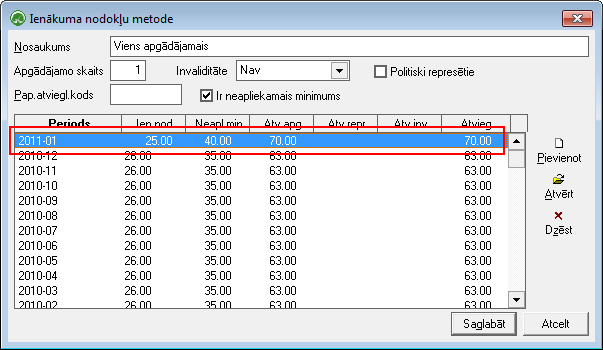

Ienākuma nodokļu metodes¶
Programmatūras lietotājam ir jāseko, vai nodokļu aprēķinu metožu sarakstos atbilstošajiem periodiem tiek noteiktas pareizas nodokļu likmes.
Ja tiek uzskaitīti dati vairākiem uzņēmumiem, tad nodokļu likmju saraksti ir kopīgi visiem uzņēmumiem.
Šajā sarakstā tiek nodefinētas uzņēmuma iedzīvotāju ienākuma nodokļa metodes algām. Ienākuma nodokļa metodes veidojas no iedzīvotāju ienākuma nodokļa, ar iedzīvotāju ienākuma nodokļa neapliekamā minimuma un atvieglojumu kombinācijām. Iedzīvotāju ienākuma nodokļa metodes tiek pievienotas darbinieku:doc:nodokļu dokumentiem<208> .
{kind=link}
Nosaukums - jānorāda iedzīvotāju ienākuma nodokļa metodes nosaukums.
Apg.skaits - jānorāda apgādājamo skaits (ja nav, tad šis lauks jāatstāj tukšs).
Saturs - jāaizpilda ienākuma nodokļa metodes likmes. Likmes jāaizpilda par katru algu aprēķina periodu. Veidojot jaunu Algu periodu visām ienākuma nodokļa metodēm automātiski par jauno periodu likmes tiek ņemtas no pēdējāesošā algu aprēķinu perioda (atverot jaunu algu periodu katrai ienākuma nodokļu metodei likmes par jauno periodu nav jāaizpilda, tās tiek aizpildītas automātiski no iepriekšējā perioda). Likmju maiņu gadījumā jāizveido jauns algu periods (piem.periods 2008-01, kuram tiek ielādētas iepriekšējā mēneša, respektīvi, iepriekšējā gada likmes), jāatver Ienākuma nodokļu metožu saraksts un katrā ienākuma nodokļa metodē jāizlabo pēdējā perioda (attiecīgi periodam 2008-01)likmes uz attiecīgā perioda atbilstošajām likmēm.

Sistēmas konfigurācijā tiek saglabātas aprēķinu metodes – iespējamie nodokļu piemērošanas veidi – darbiniekam Latvijas uzņēmumā, pensionāriem, ar apgādājamajiem vai bez u.c. Katras metodes aprakstā tiek saglabāti ieraksti katram algu aprēķina periodam.
Satura aizpildīšana.¶

Periods - jānorāda periods no Algu periodu saraksta .
Ien.nod. - jānorāda iedzīvotāju ienākuma nodokļa likme procentos.
Neapl.min. - jānorāda iedzīvotāju ienākuma nodokļa neapliekamais minimums latos par vienu mēnesi.
Atv.apg. - jānorāda atvieglojums par apgādājamajiem latos par vienu mēnesi. Jānorāda atvieglojuma kopējā summa, nevis atvieglojuma summapar vienu apgādājamo.
Atv.repr. - jānorāda atvieglojums politiski represētām personām un nacionālās pretošanās kustības dalībniekiem latospar vienu mēnesi.
Atv.inv. - jānorāda atvieglojums par invaliditāti latos par vienu mēnesi.
Atvieg. - jānorāda atvieglojumu kopējā summa par vienu mēnesi.
Piezīmes - iespēja norādīt iedzīvotāju ienākuma nodokļa metodes piezīmes.